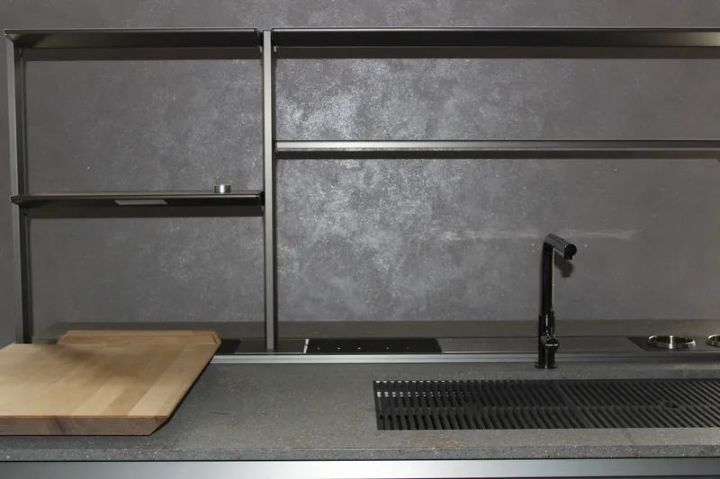
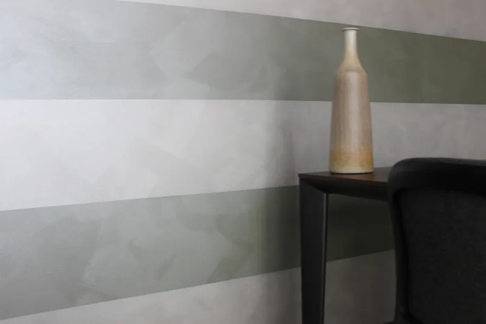
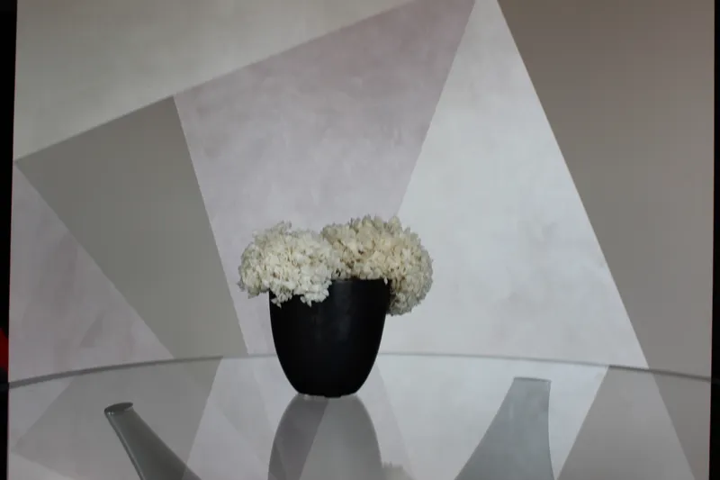
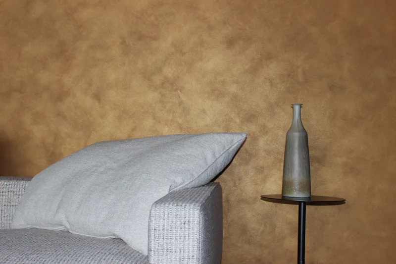

Lavori Recenti
Le Nostre Ultime Realizzazioni a Padova




Esperti in tinteggiature di qualità, isolamento pareti e trattamenti per legno a Padova. Realizziamo progetti su misura con idropitture atossiche e tecniche avanzate per ambienti sani ed eleganti.

Dalla stuccatura preparatoria fino all'applicazione di smalti e decorazioni murali di alta classe. Garantiamo un servizio curato nei dettagli e pulizia rigorosa in ogni cantiere.
Finiture di pregio con idropitture traspiranti, termiche ed ecologiche esenti da formaldeide, pensate per la salubrità e la sicurezza della tua casa.
Rivestimenti protettivi silossanici e al quarzo ad altissima resistenza, formulati per difendere la facciata da sbalzi termici, alghe e smog.
Restauro accurato di scuri, travi sotto-tetto e serramenti con impregnanti a base d'acqua che offrono massima elasticità e protezione UV.
Siamo attivi stabilmente con i nostri servizi professionali di imbiancatura, rasatura e decorazione in tutti i quartieri storici di Padova e nei comuni limitrofi della provincia veneta.
Richiedi subito un'analisi tecnica a domicilio. Studieremo la soluzione cromatica e protettiva ideale per i tuoi ambienti.
Telefono
+39 351 320 8720Disponibilità tecnica
Lun - Ven: 08:00 - 19:00
Sabato: 08:00 - 13:00
Indirizzo Email
pdimbiancatura@gmail.com



BIREST è la ditta di riferimento per i servizi presentati in questo sito. Il confronto iniziale serve a definire le lavorazioni in base allo stato dell’immobile e alle esigenze di chi lo abita.
La sede legale è distinta dall’area servita: interveniamo a Padova e provincia. Per descrivere il lavoro e concordare un sopralluogo, contattaci.
Una mazzetta fisica aiuta a confrontare le tinte prima di pitturare. RAL e NCS sono sistemi diversi: il codice identifica il riferimento cromatico, mentre il risultato dipende anche da prodotto, supporto e grado di opacità.
RAL Classic usa codici a quattro cifre, utili per coordinare pareti, porte, radiatori e carpenterie. RAL 9010 e RAL 9016, per esempio, sono due bianchi differenti: confrontali vicino a infissi e soffitto invece di sceglierli dal solo nome.
NCS descrive il colore attraverso nerezza, cromaticità e tonalità. Nel codice S 2005-Y20R, 20 indica la nerezza e 05 la cromaticità; Y20R indica un giallo con una componente rossa del 20%. È utile per confrontare neutri e sottotoni.
Le immagini a schermo sono indicative. Chiedi una campionatura con la pittura prevista e controllala sulla parete: non esiste una conversione automatica esatta tra RAL, NCS e Pantone.
RAL 9010
Bianco puro
RAL 9016
Bianco traffico
RAL 1015
Avorio chiaro
RAL 7032
Grigio ghiaia
RAL 7044
Grigio seta
RAL 7009
Grigio verdastro
I campioni digitali sono approssimazioni illustrative, non riferimenti colorimetrici ufficiali. Per confermare la tinta confronta una mazzetta RAL fisica e una prova della pittura scelta.
Parti dagli elementi che rimangono: pavimento, porte, cucina, divano e tende. Appoggia i campioni accanto a questi materiali e osserva se i sottotoni sono caldi, freddi o neutri.
Conserva codice, marca, linea, finitura e lotto della pittura: sono informazioni utili per manutenzione e ritocchi futuri.
Leggi la guida agli accostamenti, al colore dell’anno e agli abbinamenti con luci e mobili.
Verifica adesione della vecchia pittura, polverosità e assorbimento. Le parti incoerenti vanno rimosse; stuccature e rasature devono asciugare prima della carteggiatura. Il primer va scelto per il supporto e per il ciclo, evitando applicazioni eccessive che possono creare superfici lucide e poco aderenti.
Confronta in scheda tecnica resistenza allo sfregamento a umido, copertura e brillantezza: “lavabile” da solo non descrive tutte le prestazioni. Rispetta diluizione e tempi di ricopertura. La pittura antimuffa non sostituisce la ricerca di infiltrazioni, condensa o ponti termici.
Conserva il riferimento della tinta e pulisci soltanto dopo la maturazione del film prevista dal produttore, usando detergenti compatibili e senza abrasivi.
Approfondisci nel blog oppure consulta i servizi per conoscere il ciclo adatto a interni, facciate e legno.